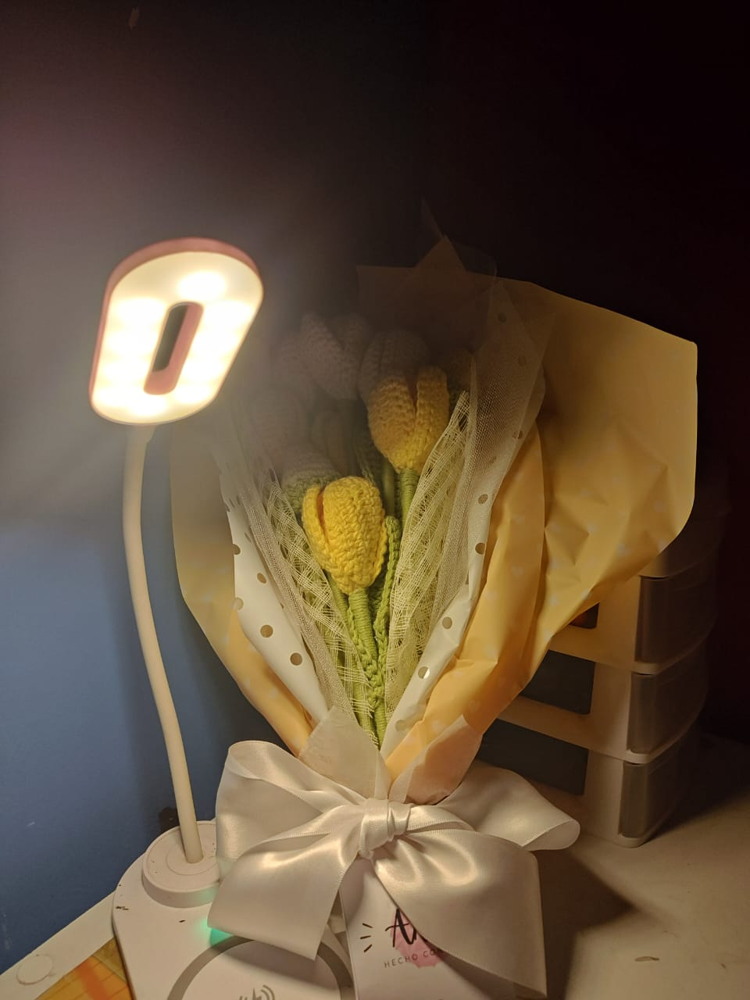
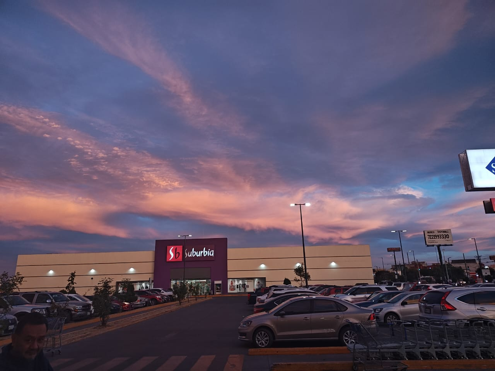
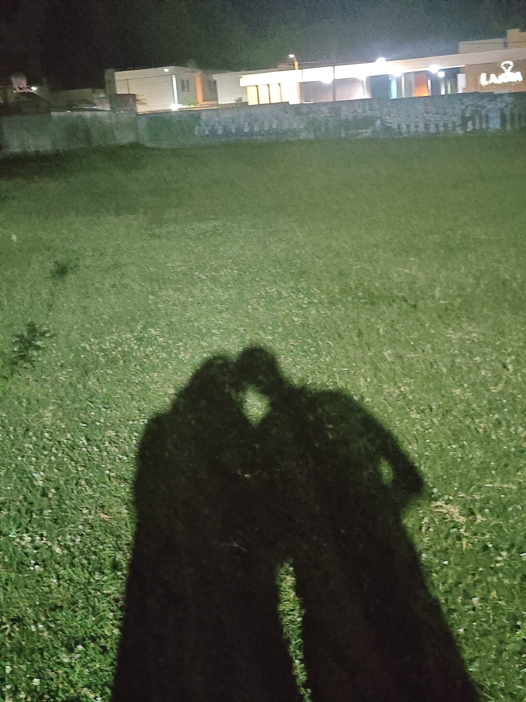
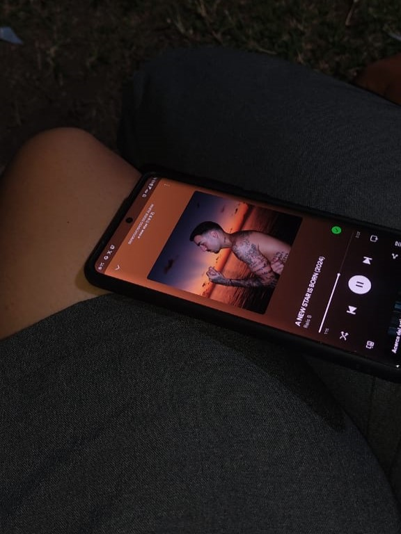

Fecha: 20/03/2024

el primer regalo...
Recuerdo que mencionaste que te gustaban los tulipanes, pero como no era temporada, decidí conseguir flores de crochet. Gracias a mi hermana, quien encontró a quien las hiciera, fue el primer regalo con el que pensé en un montón de ideas para cumplir con tus expectativas. Te mereces todo en este mundo.
Fecha: 25/03/2024

un hermoso cielo...
si bien este dia, no estuve contigo, al ver este cielo lo unico que se me vino a la mente fue "quiero compartir este cielo con Sol" es hermoso.
Fecha: 10/04/2024

primeros momentos...
una de las primeras veces que caminamos solos, en ese momento me di cuenta de la calma que sentia al estar contigo
Fecha: 17/04/2024

momento compartido...
otro de los momentos que compartimos en clases, justo un dia antes de mi Cumpleaños, no esperaba que el dia siguiente seria seleccionado para la ovi
Fecha: abril
.jpeg)
Aquel dia especial...
Aun recuerdo ese dia de lluvia, la sensacion de libertad al correr contigo, la diversion, el desinteres hacia las consecuencias de mojarnos, el vivir el momento, el que nada mas importara, simplemente uno de los mejores dias de mi vida por uno de los mejores momentos de mi vida
Fecha: 24/04/2024

pequeño descanso...
un lindo recuerdo tuyo durmiendo en mi hombro, el sentir tu respiracion, me dio una gran sensacion de seguridad junto con las ganas de querer estar contigo.
Fecha: 01/05/2024

caida del cielo...
Las estrellas se alinearon para que este momento sucediera, clases libres, estar en el laboratorio, la caida de la noche y la salida del album. Este es otro de mis mejores dias vividos, el compartir esa primera experiencia del album fue un momento magico, aun recuerdo ese dia como si fuera ayer, a dia de hoy sigo pensando en ti al escuchar esas canciones
Fecha: 05/05/2024

dia de foto...
Este dia me quede sin palabras al presenciar tu belleza no hay mas que pueda decir... simplemente eres hermosa.
Fecha: 08/05/2024

atardecer...
Uno de los muchos atardeceres que presenciamos juntos, tu estabas muy enfocada en capturar la foto perfecta, mientras yo, solo te admiraba a ti
Fecha: 12/05/2024

buganvilias...
recuerdo que esta foto ocurrio despues de un desacuerdo que tuvimos habiamos decidido que nos ibamos a separar el uno del otro, pero como despedida queria mostrarte la flor de la que tanto te habia hablado
Fecha: 16/05/2024

primera vez...
Esta foto es de mi primera vez estando en tu casa, cuando por fin pude conocer a Sheldon.
Fecha: 13/06/2024

El gran dia...
El dia de la presentacion de cts... que puedo decir sobre este dia, toda la preparacion de la prepa fue para este momento, en el cual mostramos todo lo que habiamos aprendido y logrado. mi primer proyecto de la prepa fue contigo en tedc y mi ultimo tambien fue contigo pero esta vez en cts, no pude desear un mejor final o uno mas poetico
Fecha: 28/06/2024

dia de trabajo...
este dia fue una gran salida, un plan bastante sencillo, conseguirte trabajo, pero cualquier plan es genial mientras este contigo.
Fecha: 18/07/2024

el fin...
El ultimo dia como alumnos CONALEP logramos una gran meta, y fue lo mejor el averlo compartido contigo, un momento agridulce por la felicidad y alegria que esto conlleva.
Fecha: 08/08/2024

ultimo dia...
mi ultimo en orizaba lo quise pasar contigo, no me arrepiento de esa decision, fue un gran dia es mi momento favorito de todo el año, te agradezco que hayas querido compartir eso conmigo, te amo Sol.